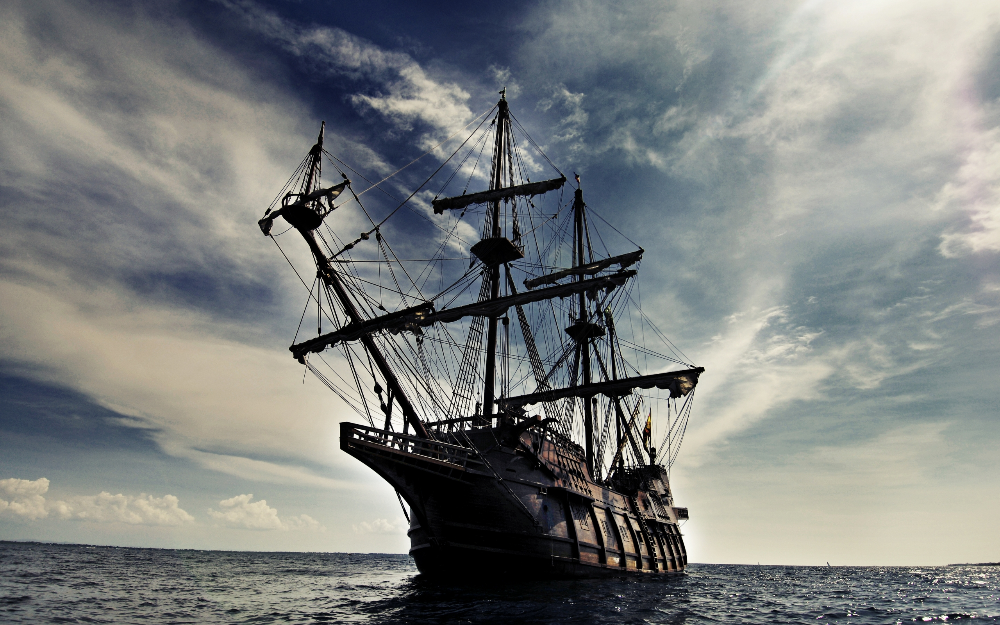
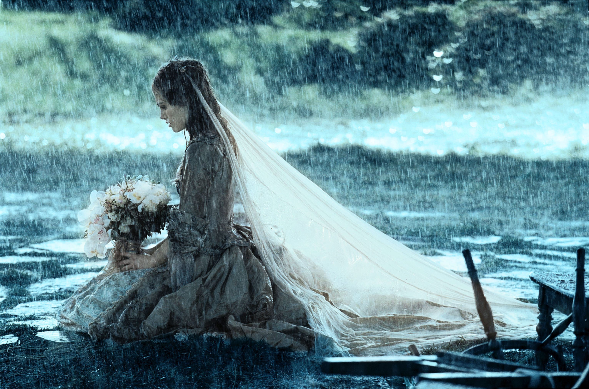

In the 18th century, Governor Weatherby Swann and his daughter, Elizabeth, embark on a journey aboard the HMS Dauntless. During their voyage, they encounter a shipwreck survivor named Will Turner, from whom Elizabeth takes a mysterious gold medallion. Their encounter is interrupted by the appearance of a ship with black sails. Eight years later, in Port Royal, Jamaica, Elizabeth's life takes a dramatic turn as she faints and falls into the sea, causing the medallion to emit a strange signal. Captain Jack Sparrow comes to her rescue, setting off a chain of events that will intertwine their fates.
Port Royal is soon attacked by the infamous Black Pearl, the very ship Elizabeth had encountered years ago. Elizabeth is captured and taken aboard to meet Captain Barbossa, who reveals the cursed nature of the Aztec gold and his crew's desperate quest to lift it. Mistaken for the child of "Bootstrap Bill" Turner, Elizabeth becomes a pawn in Barbossa's plan to break the curse.
To save Elizabeth, Will teams up with Jack Sparrow, revealing his connection to Bootstrap Bill. Together, they embark on a daring adventure to confront Barbossa and his crew at Isla de Muerta. Amidst battles and betrayals, they race against time to break the curse and rescue Elizabeth.
As alliances shift and secrets are revealed, loyalties are tested and love blossoms amidst the chaos. In a final showdown, Jack Sparrow outwits Barbossa, and with the curse broken, the pirates are defeated. Will declares his love for Elizabeth, while Jack escapes to sail the seas once more, leaving behind a legacy of adventure and freedom.
As the wedding of Will Turner and Elizabeth Swann is disrupted by the arrival of Lord Cutler Beckett and his warrants, the tangled web of alliances and debts deepens. Commodore James Norrington, resigned from the Navy and missing after a hurricane, adds to the mystery surrounding Jack Sparrow's fate.
Meanwhile, aboard the Black Pearl, Jack faces the consequences of his deal with Davy Jones, as the Kraken lurks ominously. Beckett offers a deal to Will: freedom for himself and Elizabeth in exchange for Sparrow's compass. Will's journey leads him to Jack and the quest for Davy Jones' heart, intertwined with his own desire to free his father from the Dutchman.
Betrayals and alliances shift as Elizabeth navigates the treacherous waters of piracy and politics, ultimately joining forces with Jack, Norrington, and others in pursuit of the Dead Man's Chest. On Isla Cruces, conflicts come to a head in a three-way sword fight for control of Jones' heart, with each participant driven by their own motivations.
The chaos escalates as the Kraken attacks, leaving devastation in its wake. Sacrifices are made, and alliances fracture as Elizabeth outwits the Kraken to save her crew. Norrington's deception secures power for Beckett, while Jack's fate seems sealed by the depths.
Yet, hope remains as Jack's crew, led by the resurrected Hector Barbossa, sets sail towards the mysterious World's End, driven by the possibility of rescuing their captain from his watery grave. Amidst the uncertainty of the seas, the battle for freedom and redemption rages on.
Lord Cutler Beckett's iron grip tightens as he ruthlessly executes pirates and orders Davy Jones to eradicate piracy from the seas. In response, the Pirate Lords convene at Shipwreck Cove to face the looming threat. With Jack Sparrow lost in Davy Jones' Locker and no successor named, Hector Barbossa, Will Turner, Elizabeth Swann, and their allies embark on a daring rescue mission.
Their journey leads them to Singapore, where they encounter Pirate Lord Sao Feng and face off against Beckett's forces. Negotiations and betrayals unfold as alliances are tested and secrets revealed. The crew ventures into the Locker, confronting ghosts of the past and forging new paths forward.
Back in the living world, tensions rise as battles rage and loyalties are questioned. Elizabeth is thrust into a leadership role, while Jack Sparrow navigates treacherous waters to reclaim his freedom. The fate of Davy Jones, Calypso, and the Pirate Lords hangs in the balance as the final showdown approaches.
Amidst swirling maelstroms and epic battles, love and sacrifice intertwine as alliances shift and destinies collide. With the sea as their stage, the pirates face their greatest challenge yet, determined to seize control of their own destinies and chart a course towards freedom.
As the dust settles and the waves calm, new beginnings emerge amidst the wreckage of the old. With the legacy of piracy rewritten and the tide of fate turned, the pirates sail on, guided by the stars and their own indomitable spirit.